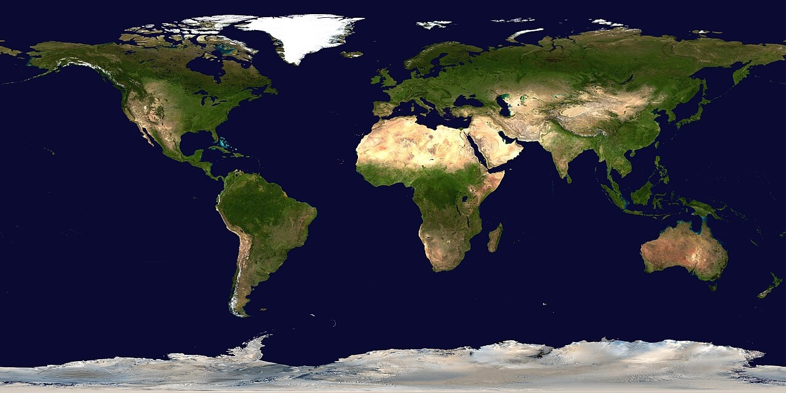

Nuestro hogar, el planeta Tierra, es el corazón en crecimiento que late al ritmo de la evolución de la humanidad. La superficie terrestre o corteza está dividida en varias placas tectónicas que se deslizan sobre el magma durante periodos de varios millones de años. La superficie está cubierta por continentes e islas; estos poseen varios lagos, ríos y otras fuentes de agua, que junto con los océanos de agua salada que representan cerca del 71% de la superficie constituyen la hidrósfera. No se conoce ningún otro planeta con este equilibrio de agua líquida, que es indispensable para cualquier tipo de vida conocida.
La Tierra se formó hace aproximadamente 4550 millones de años y la vida surgió unos mil millones de años después. Es el hogar de millones de especies, incluidos los seres humanos y actualmente el único cuerpo astronómico donde se conoce la existencia de vida. La atmósfera y otras condiciones abióticas han sido alteradas significativamente por la biosfera del planeta, favoreciendo la proliferación de organismos aerobios, así como la formación de una capa de ozono que junto con el campo magnético terrestre bloquean la radiación solar dañina, permitiendo así la vida en la Tierra. Las propiedades físicas de la Tierra, la historia geológica y su órbita han permitido que la vida siga existiendo.
La tierra vista por el Apolo 17 en 1972
El satélite ambiental Envisat de la ESA desarrolló un retrato detallado de la superficie de la Tierra. A través del proyecto GLOBCOVER se desarrolló la creación de un mapa global de la cobertura terrestre con una resolución tres veces superior a la de cualquier otro mapa por satélite hasta aquel momento. Utilizó reflectores radar con antenas de ancho sintéticas, capturando con sus sensores la radiación reflejada.
